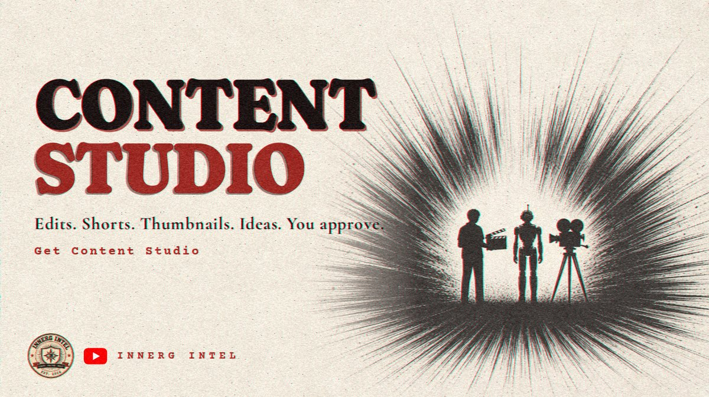

Build With Grok Bot Wednesday, Nov 11, 2026

Your content team, without the payroll
Most creators don't run out of ideas. They run out of hours. Editing, thumbnails, titles, captions and posting schedules eat the time that should go to creating.
So we built Content Studio, a Grok Bot teammate made for creators:
- Turns raw footage into clean edits and Shorts
- Drafts thumbnails, titles, descriptions and captions
- Pitches fresh video ideas every day
- Never publishes without your approval
This is the same system we run InnerG Intel on. Over the next few issues, Pulse will break down how it works: what a Grok Bot is, how to set one up, how to give it a job, and how to build routines that do the busywork while you stay the creator.
This kicks off the Build With Grok Bot series.
Learn the system. Recode the mind. Build the future.~ G, InnerG Intel